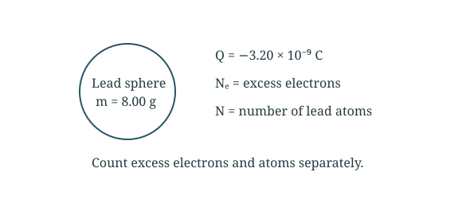
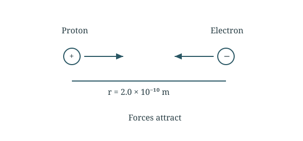
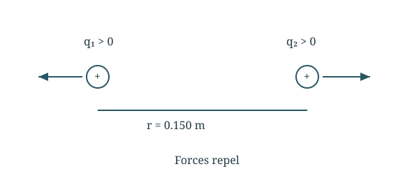

3 assigned questions with the setup, substitutions and final answers.
Question 121.1 · Counting excess electrons
A small lead sphere has mass 8.00 g and net charge −3.20 × 10⁻⁹ C. Find (a) the number of excess electrons and (b) the excess electrons per lead atom. Lead has atomic number 82 and atomic mass 207 g/mol.

Geometry and directions used below. Schematic, not to scale.
Part (a) Count excess electrons
Divide the charge magnitude by the charge of one electron.
2.00 × 10¹⁰ excess electrons; 8.59 × 10⁻¹³ per atom.
A large number of excess electrons still represents a tiny fraction of the atoms. The atomic number 82 is not needed for counting atoms from molar mass.
Question 221.3 · Proton and electron acceleration
A proton and an electron are released from rest 2.0 × 10⁻¹⁰ m apart. Find the initial acceleration of each particle.

Geometry and directions used below. Schematic, not to scale.
Find the force
The two particles attract with equal force magnitudes.
Proton: 3.4 × 10¹⁸ m/s²; electron: 6.3 × 10²¹ m/s², each toward the other.
Equal and opposite forces do not imply equal accelerations: the electron has much less mass. These are initial values; force changes as separation changes.
Question 321.9 · Solve for unknown charges
Two positively charged plastic spheres are 15.0 cm apart and repel with force 0.220 N. Find each charge (a) if the charges are equal and (b) if one charge is four times the other.

Geometry and directions used below. Schematic, not to scale.